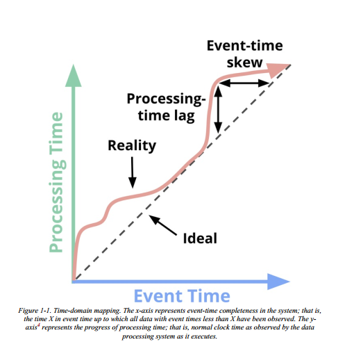
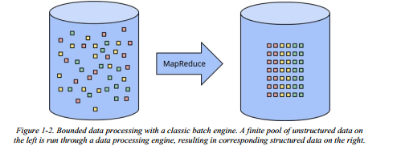
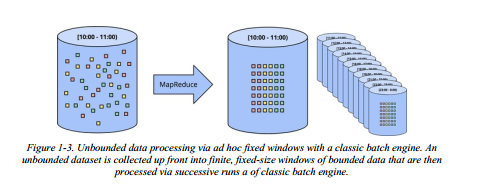
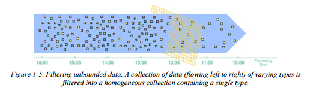
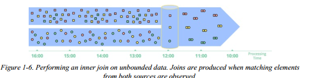
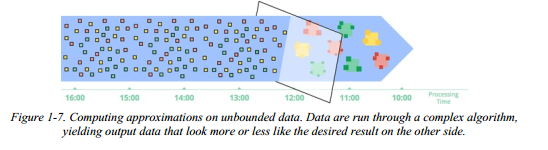
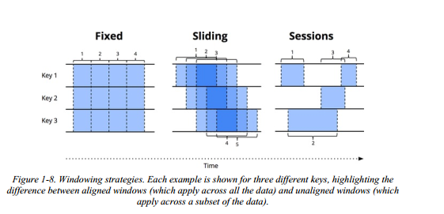
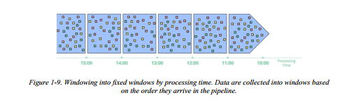
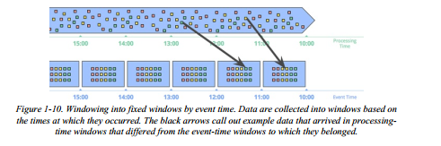
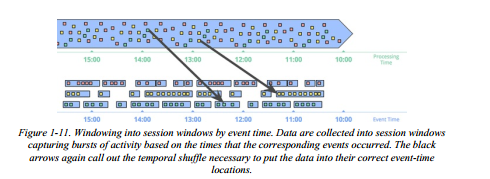

第一章 Straming 101
首先，我会介绍一些重要的背景信息来帮助构建我们将要讨论的其他主题。我分三步来做这件事：
- 术语（Terminology）
- 为了准确地讨论负载的主题，我们需要准确的术语定义。对于当前使用中有过多解释的术语，我会试着确切地表达当我说它们时的含义
- 功能（Capabilities）
- 我评论了流式系统经常出现的缺点。为了满足现代数据消费者未来的需求，我也提出了我认为数据处理系统建立者需要采纳的思想框架
- 时域（Time domains）
- 我介绍了两个与数据处理相关的主要的时间域，说明了它们之间的关系，并且之处这两个时间域所带来的一些困难
术语： 流是什么？
在进一步继续之前，我想先弄明白一件事：流是什么？当今，流这个术语常常意味着各种各样不同的东西，这可能会导致对流的真正含义或者流式系统实际上能做什么有些误解。因此，我更愿意在某些地方精确地定义这个术语。
问题的关键在于，很多东西应该被描述成what they are（无界数据处理，近似结果等），却逐渐被描述成它们历史上已经被怎样（how）完成（即通过流式执行引擎）。这种缺乏准确性的术语会影响流的真正含义，并且在某些情况下，它会给流失系统本身带来负担，暗示它们的能力仅限于历史上被描述成"streaming"的特征，例如近似或者推测结果。
鉴于精心设计的流式系统能和任何现有的批式引擎一样能够产生正确、一致、可重复的结果，我更倾向于将属于"streaming"隔离为非常具体的含义：
- 流式系统
- 一种为无限数据集设计的数据处理引擎
- A type of data processing engine that is designed with infinite datasets in mind
如果我想讨论低延迟、近似或者推测的结果，我会使用那些特定的词，而不是不准确地称它们为"streaming"
准确的术语在讨论可能遇到的不同种类的数据时也是很有用的。从我的角度来看，有两个重要的维度来定义给定的数据集：基数和构成。
数据集的基数表明了它的大小，基数最突出的方面是给定的数据集是有限还是无限的。下面有我更愿意用于描述数据集中粗粒度基数的术语
- Bounded data（有界数据）
- 一种大小有限的数据集合
- Unbounded data（无界数据）
- 一种大小无限的数据集合（至少在理论上）
基数很重的原因是无界数据集的无界特性会给处理它们的数据处理框架带来额外负担。更多内容在下一节中介绍。
- Bounded data（有界数据）
数据集的constitution 表明它的物理表现。因此，constitution 定义了可以与问题中的数据交互的方式。在第6章之前我们不会深入研究constitution，但是为了简单介绍一下，有两个重要的主要constitution
- Table
- 在特定时间点的数据集合的整体视图。SQL系统按传统方式处理表
- Stream
- 数据集随着时间演进的逐元素的视图。数据处理系统的MapReduce血缘按传统方式处理流
- Table
我们将在第6/8/9章深入研究流和表的关系。在第8章中，我们还了解了将它们联系在一起的时变关系的统一基本概念。但在此之前，我们主要处理流，因为它是构成管道开发者在当今大多数数据处理系统（批+流）中直接交互的。它也是最自然地体现流处理独有的挑战的构成。
On the Greatly Exaggerated Limitations of Streaming
让我们谈一谈流式系统可以和不可以做什么，重点放在可以做什么上。在这一章我想了解的最重要的事情是精心设计的流式系统的性能如何。流式系统历来呗降级到一个niche市场，用来提供低延迟、不准确或推测的结果，通常与更强大的批示系统结合提供最终正确的结果，即Lambda架构。
对于那些还未熟悉Lambda架构的人来说，其基本思想是，在批式系统旁边运行流式系统，两者执行相同的计算。流式系统给你低延迟、不准确的结果（要么是因为祭祀算法，要么是因为流式系统本身不提供正确性），并且在一段时间后，批式系统一路回滚并为你提供正确的输出。最初由Twitter的Nathan Marz（storm的创建者）提出，它最终取得了相当的成功，因为事实上在当时它是一个很棒的想法。流式引擎在正确性方面让有有点失望，批式引擎又很笨重，所以Lambda给了你一种能够得到想要结果的方式。但是很不幸，维护Lambda系统非常麻烦：你需要构建、配置和维护两个独立版本的管道，然后以某种方式合并最后两个管道的结果。
作为花费数年时间研究强一致性流式系统的人，我也发现Lambda架构的整个原理有点令人讨厌。不出所料，当Jay Kreps的“Questioning the Lambda Architecure”论文发表出来的时候，我是它的超级粉丝。这是第一个高度可见反对双模执行必要性陈述之一。Kreps使用Kafka这样的可重放数据的系统来作为流相互连接的桥梁，解决了流式系统可重复性的问题。甚至提出了Kappa体系结构，这意味着一个设计良好的系统仅需要使用运行一个管道，且这个系统是针对当前的工作而构建的。 我原则上完全支持这个概念。
坦率地说，我会更进一步。我认为设计良好的流式系统实际上提供了批量功能的严格超集，即设计良好的流式系统完全可以处理批量任务。感谢Apache Flink成员把这个想法铭记于心，并建立了一套all-streaming-all-the-time系统，即使是在批量模式下也是如此。
批式和流式效率差异
所有这一切的必然结果是：流式系统的广泛成熟，加上用于无限数据处理的健壮框架，最终将使得Lambda体系架构成为大数据历史上的老古董。我相信是时候实现这个目标了。因为这样做（即在Streaming自己的模式下击败Batch）你只需要两个东西：
Correctness（准确性）
这方面streaming可以做到和批式相同的效果。核心在于，正确性归结于一致的存储。流式系统需要一个方法随时间推移来对checkpoint状态进行持久化（Kreps在他的“Why local state is a fundamental primitive in stream processing”论文中讨论的东西），并且它必须被设计足以在机器故障的情况下保持一致。几年前，当Spark Streaming首次出现在公共的大数据场景中，它就是黑暗的streaming世界中的一座灯塔，尤其是一致性方面。所幸，从那以后事情有所改善，但是很多流式系统仍然试图在没有强一致性的情况下获得成功。
重申——因为这一点十分重要：exactly-once处理需要强一致性，正确性也需要强一致性，任何有机会满足或者超出批式系统能力的系统都需要强一致性。除非你真的不关心你的结果，否则我恳请你避开所有不提供强一致性状态的流式系统。批式系统不需要你提前去验证它们是否能够生成正确的结果，不要浪费时间在那些不能满足相同标准的流式系统上。
如果你想了解更多有关在流式系统中获取强一致性的所需的内容，我建议你查看MillWheel、Spark Streaming、Flink snapshotting论文。这3篇文章都花费了大量时间讨论一致性。Reuven将在第5章中深入探讨一致性保证，如果你仍然渴望更多内容，那么在文献和其他地方有关于该主题的大量高质量信息。
[MillWheel]: [Spark Streaming]:
[Flink snapshotting]: https://arxiv.org/pdf/1506.08603.pdf
Tools for reasoning about time
- 这方面streaming将超越batch。好的时间推理工具对于处理event-time偏差不固定的无界、乱序的数据至关重要。越来越多的现代数据集表现出这些特征，而现有的批式系统（以及很多流式系统）缺少必要的工具去应对它们引入的问题。我们将花费本书的大部分来解释和关注这点的方方面面。
- 首先，我们会对时域的重要概念有个基本了解，然后，我们会深入研究我说的处理event-time偏差不固定的无界、乱序的数据的含义。之后，我们花费本章的剩余部分通过使用批式和流式系统，来研究有界和无界数据处理的常用方法。
Event Time Versus Processing Time
要谈论无界数据处理，需要对涉及的时间域有个清楚的理解。在任何数据处理系统中，我们通常关心两个时间域：
- event time
- 事件真实发生的时间
- processing time
- 系统中观察到事件的时间
不是所有的用例都关心event time，但是很多都需要关心。比如包含表征随时间推移的用户行为、大部分交易应用和很多类型的异常检测在内的例子。
理想情况下，event time和processing time总是相等的，事件已发生就立马被处理。然而，现实并非如此，event time和processing time之间的偏差不仅非0，而且通常是底层输入源、执行引擎和硬件的特性的高可变函数。可能影响偏差的事情包括：
- 共享资源限制，如网络拥塞，网络分区，或者非专用环境中共享的CPU
- 软件引起，如分布式系统逻辑、争用等等
- 数据本身特点，如key分布，吞吐量变化，或者无序的变化
因此，如果你在任何现实世界的系统汇总绘制event time和processing time的进度，你通常会得到类似于图1-1的红线的内容。

图1-1中，斜率为1的黑色虚线代表理想值，也就是processing time和event time相等；红线表示真实值。这个例子中，processing time开始时滞后一些，中间又偏向理想值，然后又再次滞后一点。乍一看，这个图有两种skew，每种都在不同的时域中：
- processing time
- 理想线和红线之间的垂直距离是processing-time域的滞后。这个距离告诉你在事件的发生时间和被处理时间之间所观测到的延迟。
- event time
- 理想线和红线之间的水平距离是此时管道中event-time的偏移量。它告诉你当前管道落后理想值多久。
实际上，在任何给定点，processing-time lag和event-time skew是相同的，它们仅仅是观察同一件事的两种方式。关于lag/skew重要的内容是：由于事件时间和处理时间之间的整体映射不是静态的（即，lag/skew可能随时间任意变化），这就意味着如果你关心它们的事件时间（即实际发生事件的时间），就无法单独在你的管道观测到数据时的上下文中分析你的数据。不幸的是，这是很多系统为无界数据设计的方式。为了应对无界数据集的无限性，这些系统通常提供一些窗口化输入数据的概念。我们稍后会更深入地讨论窗口化，但它本质上是沿着时间边界把数据集切成有限的块。如果你关心正确性，并且有兴趣在事件时间的上下文中分析你的数据，你就不能像很多系统那样用processing time（即，processing-time窗口化）去定义那些时间边界；在处理时间和事件时间之间没有一致的关连的话，一些event-time数据将会在错误的processing-time窗口中结束（因为分布式系统固有的lag，多种输入源的在线/离线特性等等），然后缺乏正确性。我们将在接下来的章节通过一些例子来更详细地研究这个问题。
不幸的是，当按事件时间窗口化时，上图也不够乐观。在无界数据的上下文中，乱序和可变的skew会导致event-time窗口的完整性问题：缺少可预测的处理时间和事件时间之间的映射，你如何确定你何时观察到了给定事件时间X的所有数据？对于很多现实世界的数据源，你根本做不到。但是当今使用的绝大多数处理系统都依赖一些完整性概念，这使得它们在应用于无界数据集时处于严重劣势。
我建议不要试图去把无界数据切成最终完整的信息的有限批次，而应该设计工具，使我们能够生活在这些复杂数据集带来不确定性的世界中。新数据将到达，旧数据可能被撤销或者更新，我们构建的任何系统都应该能够独立处理这些事实，完整新概念应该是对特定和适当的用例的方便的优化，而不是语义上的必要。
在详细介绍这种方法可能是什么样子之前，让我们完成一个更有用的背景：常见的数据处理模式。
Data Processing Patterns
这个时候，我们已经建立了足够的背景知识，可以开始研究当今有界和无界数据处理常见的核心类型的使用模式。我们将在我们关系的2种主要引擎（批式和流式，我把microbatch当做streaming来讨论，因为在这个级别二者的区别不是很重要）的上下文中研究这两种处理方式
Bounded Data
处理有界数据 在概念上很简单，而且每个人都很熟悉。图1-2中，左边数据集由熵填满。我们通过一些如MapReduce的数据处理引擎（通常是批处理，尽管涉及良好的流式引擎也可以工作得很好）运行它，得到右边的具有更大内在价值的结构化数据集。

虽然作为此方案的一部分，您实际可以计算的内容当然有无限变化，但整体模型非常简单。更有趣的是处理无界数据集的任务。现在让我来研究通常处理无界数据的各种方式，从传统的批式引擎使用的方法开始，到最后的你可以采用的专门为无界数据设计的方法，如大多数流式或者微批引擎。
Unbounded Data：Batch
虽然没有明确为无界数据设计，但批式引擎还是被用来处理无界数据集，因为批式系统是最先被构思的。如你所料，这种方法思想就是把无界数据切分成适合批处理的有界数据集的集合。
Fixed windows
使用批式引擎的重复运行来处理无界数据集最常见的方法就是：把输入数据窗口化成固定大小的窗口，然后将每个窗口作为一个独立、有界的数据源来处理（有时也称为翻滚窗口（tumbling windows）），如图1-3。尤其对于输入源如日志这种，事件可以被写入目录或者文件层次结构中，这些目录和文件层次结构的名称会对它们所对应的窗口进行编码，这种东西乍一看十分简单，因为您基本上已经执行了基于时间的shuffle来获取数据。
然而，实际上大多数系统仍然存在完整性的问题需要解决（如果因为网络分区导致一些事件在路由过程中延迟了，会怎么样？如果你的事件是被全局收集的，并且在处理之前必须转移到公共位置，会怎么样？如果你的事件来自移动设备会怎么样？），这就意味着某种缓和措施是必须的（例如，延迟处理直到你确认你已经收到所有事件，或者无论数据迟到何时都重新处理给定窗口整个批次）

Sessions
当你试图使用批式引擎将无界数据处理成更复杂的窗口化策略时（sessions），这种方式更加糟糕。会话通常被定义为由不活动间隙终止的活动周期。当使用典型的批式引擎来计算会话时，你常常会遇到被跨批次分割的会话，如图1-4中红色标记所示。我们可以通过增加批次的大小来减少分割的数量，但代价是会增加延迟。另一种选择是添加额外的逻辑来拼接先前运行的会话，但代价是进一步复杂化。
无论哪种方式，使用经典的批式引擎去计算会话都不够理想。更好的方式是以流的方式建立会话，后面我们会研究。
Unbounded Data：Sreaming
与大多数基于批的无界数据处理的方式的临时性质相反，流式系统就是为无界数据建立的。如我们之前讨论的，对于很多现实世界的分布式输入源，你会发现你不仅需要处理无界数据，还需处理以下数据：
- 在事件时间方面高度乱序（Highly unordered with respect to event times ），意味着如果你想在这些数据发生的环境下分析数据，你就需要在管道中进行一些基于时间的shuffle
- Of varying event-time skew，意味着你不能仅仅假设你将总是在某个恒定时间Y中看到给定的事件时间的大部分数据
在处理具有这些特征的数据时，您可以采取一些方法。我通常把这些方法分为4组：
- time-agnostic
- approximation
- windowing by processing time
- windowing by event time
现在让我们花点时间来研究这几种方法。
Time-agnostic
Time-agnostic处理用于时间基本无关的情况；也就是说，所有相关逻辑都是数据驱动的。因为有关此类用例的所有内容都是由更多数据的到来决定的，所以除了基本数据传输之外，流引擎实际上没有什么特别需要支持的。因此，基本上所有流式系统都支持开箱即用的时间不可用的用例（当然，如果你关心正确性，模块系统到系统的一致性保证差异）。批式系统也适用于无界数据源time-agnostic处理，可以通过把无界数据源切分成任意序列的有界数据集，然后独立处理这些数据集。我们在本节中研究一些具体的例子，但考虑到Time-agnostic处理的简单性（至少从时间角度来看），我们不会花太多时间在它上面。
Filtering
Time-agnostic处理的一种非常基本的形式就是filtering，图1-5中呈现的例子。加入你要处理web流量日志，你想过滤掉不是来源于某个特定域名的所有流量。你将观察每个到达的记录，看是否属于那个域名，如果不是就丢掉。由于这种情况在任意时间都仅仅只是依赖单个因素，因此数据源是无界、乱序和变化的event-time skew是无关紧要的。

Inner joins
另一个时间无关的例子是inner join，如图1-6。当join两个无界数据源时，如果你只关心来自于两个数据源的元素到达后join的结果，则没有逻辑中没有时间因。当一个数据源的值来了以后，你可以简单地把它缓存起来，只有来自于另一个数据源的值到达以后，才需要发出join后的记录。（事实上，你可能想要一些垃圾回收策略去回收未发送部分的连接，这可能是基于时间的。但是对于基本没有未完成join的用例来说，这应该不是问题因

将语义切换到一些外连接会有我们之前讨论的数据一致性问题：在你已经看到该连接的一方后，你如何知道另一方是否会到达？你没法知道，说实话你需要引入timeout的概念，这将引入时间因素。时间因素本质上是窗口化的一种形式。
Approximation algorithms
第二种主要的方法是近似算法，如近似Top-N，streaming k-means等。它们的输入是无界数据源，输出数据看起来或多或少有点像你想要的得到结果，如图1-7。近似算法的有点在于，开销低并且为无界数据设计。缺点是算法通常比较复杂，并且算法的近似性质限制了它们的效果。

值得注意的是，这些算法的设计中通常包含一些时间元素（比如某种内置衰变）。由于它们在元素一到达时就开始处理，所以时间元素通常是基于processing-time的。这对于在其近似上提供某种可证明的误差界限的算法尤其重要。如果那些误差界限在数据有序到达时是可预测的，那么当您向算法提供具有变化event-time skew的无序数据时，它们基本上没有任何意义。
近似算法本身是一个引人入胜的主题，但由于它们本质上是时间不可知处理的另一个例子（以算法本身的时间特征为模），因此我们可以非常直接地使用它们，因此，鉴于我们目前的重点，它们不值得进一步关注。
Windowing
剩下两种无界数据处理的方法都是窗口化的变形。在深入研究这二者的区别之前，我应该清楚地说明白窗口化的确切含义，因为我们在上一节中只是简单地提到了它。窗口化只是获取数据源的概念（要么是无界的，要么是有界的），根据时间把数据源切分成多个有限的数据块来处理。图1-8展现了3种不同的窗口模式。

让我们仔细研究下每种策略：
- Fixed windows (aka tumbling windows)/固定窗口（又叫翻滚窗口）
- 我们之前讨论过固定窗口。固定窗口将时间切为固定时长的分段。通常（如图1-9显示），固定窗口的分段被均匀地应用于整个数据集，这就是对齐（aligned）窗口的一个例子
- Sliding windows (aka hopping windows)/滑动窗口（又称跳跃窗口）
- 滑动窗口是固定窗口的一般化形式，它具有固定长度和固定周期。如果周期小于长度的话，则窗口会重叠。如果周期和长度相等，你就得到了固定窗口。如果周期大于长度，则会得到一个奇怪的采样窗口，该窗口仅查看数据的子集随时间的变化。与固定窗口一样，滑动窗口通常是对齐的，但在某些用例中它们可能会因为性能优化而变成不对齐的。请注意，图1-8中的滑动窗口是按原样绘制的，以提供滑动感; 实际上，所有五个窗口都将应用于整个数据集。
- Sessions
- 会话是动态窗口的例子，会话是由大于某个超时的不活动间隙终止的事件序列组成。会话通常用于分析随时间变化的用户行为，通过将一系列时间相关的事件分成一组。会话很有意思，因为它们的长度不能被先验地定义，它们是取决于涉及到的实际数据。它们也是未对齐窗口的规范示例，因为会话实际上在不同数据子集（例如，不同用户）之间从不相同。
我们之前讨论的两个时域（处理时间和事件时间）基本是我们最关心的。窗口化在这两个时域中都有意义，所以让我们详细研究下它们，然后理解如何区分它们。因为processing-time窗口在历史上比较常见，我们从它开始。
Windowing by processing time
当根据处理时间来窗口化时，系统实际上是把输入数据缓存到窗口中，知道经过一定量的处理时间。比如，有个长度为5min的固定窗口，系统将数据缓存5分钟的处理时间，之后它会将在这五分钟内观察到的所有数据视为一个窗口并将它们发送到下游进行处理。

处理时间窗口化有几个好的特性：
- 它很简单。其实现极其简单，因为你不用担心随时间推移的shuffling数据。你只要在它们到达时把它们缓存起来，然后再窗口关闭时将它们发往下游。
- 判断窗口完整性很简单。由于系统完全知道一个窗口的所有输入是否都已被看到，所以它可以对给定窗口是否完成做出完美的决定。这意味着根据处理时间来窗口化时是不需要能够处理“迟到”数据的。
- 如果您想要根据观察到的数据推断信息源，processing-time窗口化正是你想要的。许多监控方案都输入这一类。想象一下，跟踪每秒发送到一个全球的web服务的请求数。为了检测中断而计算这些请求的速率是处理时间窗口的完美使用。
除了优点之外，processing-time窗口化有一个非常大的缺点：
- 如果相关数据具有事件时间，那么如果processing time窗口要反映这些事件实际发生的时间，则这些数据必须按照event time顺序到达。
不幸的是，在许多实际的分布式输入源中event time有序的数据并不常见。
举个简单的例子，想象一下，任意一个收集使用的统计数据以供后续处理的移动app。如果给定的移动设备脱机一段时间（），在这期间被记录的数据将不会被上传，直到该设备再次联机才会上传。这意味着数据可能以分钟、小时、天、周或更长时间的 event time skew到达pipeline。在使用processing time窗口化时，基本上不可能从这样的数据集中得出任何有用的推论。
另一个例子是，很多分布式输入源在整体系统健康的时候，似乎可以提供event-time有序的数据。不幸的是，事实上健康时，虽然输入源的event-time skew很低，但并不意味着它将始终保持这种状态。考虑一个全球服务，它处理多个洲收集来的数据。 如果网络在带宽受限的跨大陆线路上出现问题(遗憾的是，这种情况非常普遍)会进一步降低带宽和/或增加延迟，那么你的一部分输入数据可能会突然出现比之前更大的skew而到达。如果你是根据处理时间来窗口化的那些数据，那么你的窗口不再代表其所对应时间段内实际发生的数据；相反，它们代表事件到达处理管道时的时间窗口，这是一些任意组合的旧数据和当前数据。
在这两种情况下，我们真正想要的是通过event time来窗口化数据，这种方式对事件到达的顺序是可以保证的， 即我们真正想要的是event time窗口。
Windowing by event time
event time窗口是在需要以有限个时间块来观察数据源时使用的窗口，这些数据源反映了这些事件实际发生的时间。这是划分窗口的黄金标准。2016年之前，大多数在使用的数据处理系统都缺少对事件时间的原生支持（即使任何具有良好一致性模型的系统，如Hadoop或Spark Streaming 1.x，都可以作为构建这种窗口化系统的合理基础）。我很高兴地说今天的世界看起来非常不同，有多个系统，从Flink到Spark，Storm到Apex，都原生支持某种事件时间窗口。
图1-10展示了把无界数据源窗口化成时长为1小时的固定窗口的例子

图1-10中的黑色箭头显示的是在processing-time窗口到达的数据，它们所在的processing time窗口与它们所属的event time窗口不匹配。因此，如果这些数据被窗口化到processing time窗口中，而processing time窗口又与event time有关，那么计算出来的结果就不正确了。因此使用event-time窗口的一个好处就是，保证event-time的正确性。
对无界数据源进行event-time窗口化的另一个好处是，你可以创建动态大小的窗口，比如sessions， 没有像之前那种，在固定窗口上生成session时所产生的对session的任意分割（正如前面session例子中所看到的）。

数据被收集到会话窗口，根据相应事件发生的时间捕获活动的突发事件。白色箭头再次指出将数据放入正确的event time位置所需的时间shuffer
当然，强大的语义是需要代价的，event-time窗口也不例外。因为窗口的生存时间(在处理过程中)通常比窗口本身的实际长度长（因为会有迟到的数据），event-time窗口有两个明显的缺点：
- Buffering
- 由于窗口寿命的延长，需要缓存更多的数据。所幸，持久化存储通常是大多数数据处理系统所依赖的资源类型中最便宜的一种（其他的主要是CPU、网络带宽和RAM）。因此，在使用任何设计良好的数据处理系统(具有强一致的持久状态和良好的内存缓存层)时，这个问题通常不像人们想象的那么严重， 此外，许多有用的聚合不需要缓冲整个输入集(例如，sum或average)，而是可以使用存储在持久化状态中的更小的中间聚合数据增量地执行。
- Completeness
- 鉴于我们通常没有好的办法知道何时看到了给定窗口的所有数据，那么我们怎么知道何时能得到该窗口的结果呢？事实上，我们无法知道。对于许多类型的输入，系统可以通过诸如MillWheel，Cloud Dataflow和Flink（我们在第3章和第4章中讨论的更多）中的watermark之类的东西给出窗口完整性的合理准确估计。但对于要求绝对正确的例子（例如计费），唯一真正的选择是为管道构建器提供一种方法，以便在pipeline builder想要物化windows的结果时表达这些结果。
Summary
在详细研究Beam Model方法之前，让我们简单回顾一下到目前为止所学的内容。本章，我们完成了：
- 澄清了术语，将"streaming"的定义聚焦于无界数据的系统建立上，同时使用更多的描述性术语（如近似/推测的结果），这些不同概念的术语通常被分类到"streaming"的范畴
- 评估了设计良好的批式系统和流式系统的相对功能，断定实际上流式是批式的严格超集，类似于Lambda架构的概念（认为基于流式不如基于批式），随着流式系统的成熟，注定要被淘汰
- 提出了流式系统赶上并最终超过批式系统所必须的两个高级概念，分别是正确性和时间推理工具
- 确定了事件时间和处理时间之间的重要差异，描述了在数据发生时分析数据时那些差异所带来的困难，并提出了一种从完整性概念转向简单适应数据随时间变化的方式
- 研究了当今普遍用于有界和无界数据的主要数据处理方式，通过批式和流式引擎，大致将无界方式分成：time-agnostic，approximation，windowing by processing time和windowing by event time
接下来，我们深入研究Beam Model的细节，从概念上看看如何通过4个相关轴来分解数据处理的概念：what、where、when、how。我们还详细研究了处理多个场景中的简单、具体的示例数据集，突出Beam模型启用的多个用例，以及一些具体的APIs以实现我们的基础。这些示例将有助于推动本章介绍的事件时间和处理时间的概念，同时另外探索水印等新概念。